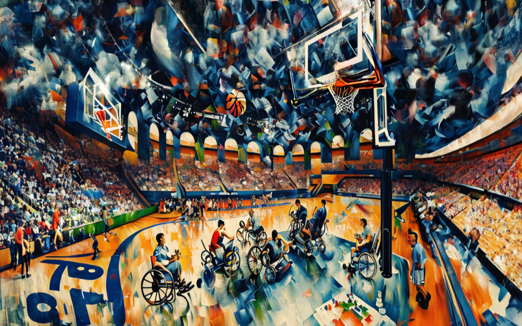
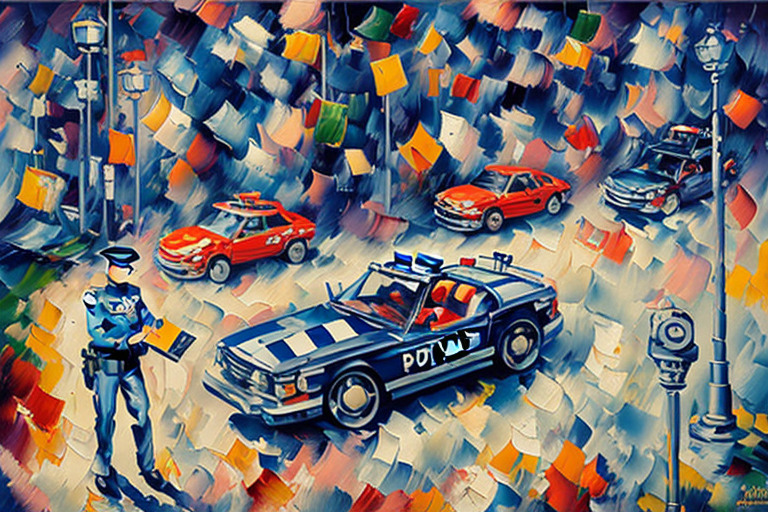
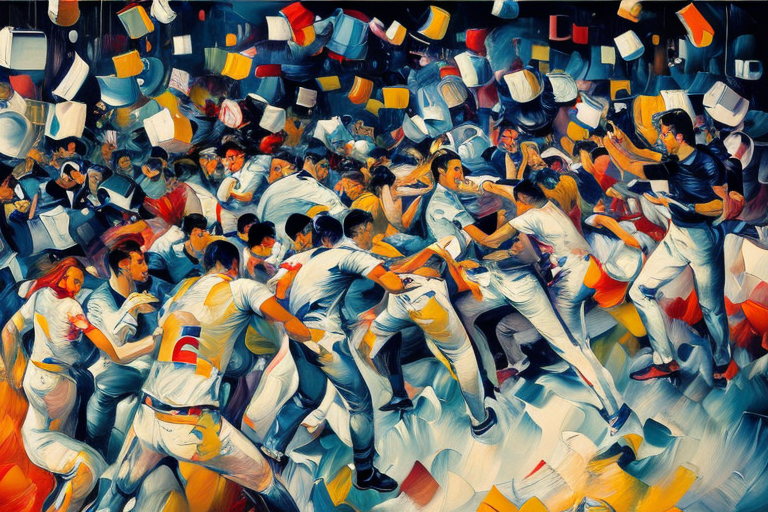

Ο Αλφαίος και το μπασκετικό παιχνίδι αναπήρων
Αρχική Σελίδα
Πίνακας Περιεχομένων
Σήκωμα ψηλά

Ο Αλφαίος ήταν ο μέσος νέος, εκτός από μια μικρή λεπτομέρεια που τον ξεχώριζε απ’τους άλλους νέους. Ήταν καθηλωμένος σε αναπηρικό καροτσάκι. Ο Αλφαίος έκανε ό,τι καλύτερο μπορούσε για να βγει και να ζήσει τη ζωή όπως κάθε άλλος εικοσάχρονος. Αδυνατούσε όμως να ξεφύγει από τα όρια της αναπηρίας του. Αλλά ο Αλφαίος δεν το άφησε ποτέ τον απογοητεύσει. Μάλιστα, το χρησιμοποιούσε ως ευκαιρία να συνδεθεί με άλλους που μοιράζοταν την ίδια μοίρα.
Και κάπως έτσι βρέθηκε σε ένα κέντρο της τοπικής κοινότητας, συμμετέχοντας σε αγώνα μπασκέτιου με αναπηρικά αμαξίδια. Καθώς ο Αλφαίος στριφογυρνούσε τη μπάλα, ένιωσε να συμβαίνει κάτι περίεργο. Τα πόδια δεν ήταν τα μόνα άκρα που προπονούσε απόψε. Ένιωθε ακόμα και τα χέρια του δυνατότερα απ’ ό,τι συνήθως. Μέχρι το ημίχρονο, είχε πετύχει περισσότερους πόντους από οποιονδήποτε στην ομάδα του.
Ξαφνικά όμως μια στιγμή, μπροστά στα μάτια όλων των θεατών, συνέβη το απρόσμενο. Ο Αλφαίος σηκώθηκε από την καρέκλα του και έτρεξε ολοταχώς προς το καλάθι. Ήταν σαν κάποιος να πάτησε έναν κουμπί μέσα του, ξεκλειδώνοντας ικανότητες που ποτέ δεν ήξερε ότι κατείχε. Το πλήθος ξέσπασε σε ζητωκραυγές καθώς βύθισε τη βολή, αλλά το μυαλό του αδυνατούσε να κατανοήσει τι ήταν αυτό που μόλις είχε συμβεί. Πως εγινε αυτο? Ήταν κάποιο είδος θαύματος ή υπήρχε άλλη εξήγηση; Όποιος κι αν ήταν ο λόγος, ο Αλφαίος ήξερε ότι το μέλλον δεν θα ήταν ποτέ ξανά το ίδιο.
Καθώς ο ήλιος ανέτειλε στον ορίζοντα, ο Αλφαίος δεν μπορούσε παρά να νιώσει μια αίσθηση προσμονής να αναβλύζει μέσα του. Είδε ένα όνειρο χθες το βράδυ, να βυθίζει βολές, τους πόντους αυτούς ενώ στέκεται όρθιος στο γήπεδο. Αδύνατον, σκέφτηκε απο μέσα του. Εάν το αίσθημα απελευθέρωσης από το αναπηρικό του καροτσάκι ήταν αληθινό, σχεδίαζε να το αξιοποιήσει στο έπακρο παίρνοντας στο γήπεδο σήμερα στον αγώνα μπασκέτιου του μεγάλου πρωταθλήματος.
Για μια φορά, ο Αλφαίος ένιωσε ότι ήταν ισότιμος με κάθε άλλον. Δεν θα χρειαζόταν πλέον τη βοήθεια αυτών των μεταλλικών τροχών για να προωθηθεί, αντίθετα, έτρεχε και πετύχαινε βολές όπως κάθε παίκτης στο γήπεδο. Ανυπομονούσε να επιδείξει τις καινούριες δεξιότητές του στους συμπαίκτες του που χρησιμοποιούν αναπηρικό καροτσάκι, πολλοί από τους οποίους περνούσαν αμέτρητες ώρες εκπαίδευσης με τα αμαξίδια, θεωρώντας ως δεδομένο ότι θα έμεναν πάντα ενωμένοι με τις καρέκλες τους.
Το σφύριγμα σηματοδότησε την έναρξη του μεγαλύτερου αγώνα της χρονιάς. Ο Αλφαίος πήρε τον έλεγχο της μπάλας, σηκώθηκε στα δυο του πόδια και αμέσως προσχώθηκε για το τέρμα, αφήνοντας πίσω στη σκόνη του αμυντικούς. Σε κάθε βήμα του άκουγε επευφημίες από την κερκίδα. Ακόμη και οι συμπαίκτες του έμειναν έκπληκτοι, αβέβαιοι για το αν έπρεπε να πανηγυρίσουν ή να το περιγράψουν ως παραβίαση των κανονισμών. Αλλά ο Αλφαίος δεν τους έδωσε σημασία, γνωρίζοντας βαθιά μέσα του ότι αυτοί οι περιορισμοί που τίθενται στην κοινωνία δεν ήταν παρά αυθαίρετα κατασκευάσματα που δημιουργήθηκαν από εκείνους που φοβούνται την αλλαγή. Όπως λένε, “όπου υπάρχει θέληση, υπάρχει και ο τροχοφόρος δρόμος”.
Δίκαιο παιχνίδι, σκληρός ανταγωνισμός

Αφού ο Αλφαίος πέλτησε τον πόντο, η ατμόσφαιρα στο γήπεδο άλλαξε δραματικά. Οι οπαδοί των δύο ομάδων έμειναν έκπληκτοι από την ξαφνική τροπή των γεγονότων. Κάποιοι ήθελαν να αντεπιτεθούν δυνατά οι γηπεδούχοι τους, ενώ άλλοι ήθελαν να τους συντρίψει η αντίπαλη ομάδα.
Ωστόσο, μόλις η αρχική έκπληξη πέρασε, η ένταση μεταξύ των αντιπάλων οπαδών έφτασε στην κόψη του μαχαιριού. Οι υποστηρικτές της αντίπαλης ομάδας κατηγόρησαν την ομάδα του Αλφαίου για εξαπάτηση, υποστηρίζοντας ότι η πρόσφατη ικανότητά του να περπατά ήταν άδικη.
Από την άλλη πλευρά, οι σκληροί οπαδοί της ομάδας του Αλφαίου δεν έβλεπαν τίποτα επιλήψημο σε ότι μόλις συνέβη. Σε τελική ανάλυση, αν τα πόδια του Αλφαίος λειτουργούσαν καλύτερα τώρα από ποτέ, δεν θα έπρεπε αυτό να μετρήσει ως νίκη για την ομάδα τους;
Με την ψυχραιμία τους να τελειώνει και τον εκνευρισμό να φουντώνει, χάος ήταν ὲτοιμο να ξεσπάσει. Οι φίλαθλοι άρχισαν να φωνάζουν προσβολές, προκαλώντας ο ένας τον άλλον να βγει έξω από τον αγωνιστικό χώρο για τον κλασικό καβγά. Το προσωπικό ασφαλείας μπήκε γρήγορα μέσα, προσπαθώντας απεγνωσμένα να διατηρήσει την τάξη προτού η κατάσταση ξεφύγει από τον έλεγχο.
Μέσα σε αυτόν τον πανζουρλισμό, προπονητές και διαιτητές μαζεύτηκαν μαζί, συζητώντας αν έπρεπε να επιτραπεί στον Αλφαίο να συνεχίσει να παίζει. Οι νέες του ικανότητες θεωρούνται δίκαιες ή παραβιάση κανονισμών; Μετά από πολλή συζήτηση, κατέληξαν τελικά σε μια απόφαση, ο Αλφαίος μπορούσε να παραμείνει στο παιχνίδι, αλλά μόνο υπό έναν όρο, να φοράει μια ειδική συσκευή γύρω από τη μέση του, σχεδιασμένη να κρατά τα πόδια του ακινητοποιημένα όπως ένας παραδοσιακός χρήστης αναπηρικού αμαξιδίου.
Φυσικά, αυτή η απόφαση δεν έκατσε καλά με ένα μεγάλο μέρος των υποστηρικτών του Αλφαίου. Κάποιοι υποστήριζαν ότι έβαζε ένα αχρείαστο βάρος στον Αλφαίο, περιορίζοντας τα φυσικά του ταλέντα προς χάριν της τήρησης απαρχαιωμένων κανόνων. Άλλοι ανταπάντησαν όμως ότι εάν του επιτρεπεί να τρέχει ελεύθερος χωρίς περιορισμούς του προσδίδει ένα αθέμιτο πλεονέκτημα, καθιστώντας ουσιαστικά τον ανταγωνισμό άσκοπο.
Στο τέλος, ο Αλφαίος επέλεξε να συμμορφωθεί με τους κανονισμούς. Εξάλλου, η νίκη δεν ήταν το παν, ο σεβασμός στο άθλημα και τους κανόνες του, είχε εξίσου μεγάλη σημασία. Επιπλέον, κατάφερε να πετύχει πολλούς πόντους παρά τους επιπλέον περιορισμούς. Μετά το τελευταίο σφύριγμα, η ομάδα του βγήκε νικήτρια μέσα σε ένα βουητό διαμάχης και χειροκροτημάτων.
Πρόστιμο για ταραχές

Μετά την λήξη του επίμαχου παιχνιδιού, οι παίκτες και των δύο ομάδων αποσύρθηκαν στα αποδυτήρια τους. Ωστόσο, ένας συγκεκριμένος θεατής αρνούταν να παραδεχθεί την τελική βαθμολογία ως δίκαια. Ήταν ένας εύσωμος άνδρας που φορούσε ένα καπέλο με το έμβλημα της αντίπαλης ομάδας, και εξήλθε από το γήπεδο, βράζοντας από οργή.
Κανείς δεν εγνώριζε όμως, πως ο εξαγριωμένος θαυμαστής δεν ήταν ένας απλός υποστηρικτής. Ήταν ένας μυστικός αστυνομικός που εργαζόταν σε μια μυστική επιχείρηση κατά των ψευδών δηλώσεων αναπηρίας, μασκαρεμένος ως φίλαθλος του αγώνα.
Ο Γιάννης πήγε στον χώρο στάθμευσης, αποφασισμένος να δώσει στον Αλφαίο ένα μάθημα που θα το θυμόταν για καιρό. Μόλις έφτασε στο όχημα του Αλφαίου, φυσικά το εντόπισε σταθμευμένο ακριβώς πάνω σε σημείο για άτομα με ειδικές ανάγκες. Χωρίς δισταγμό, ο Γιάννης κόλλησε μια αναφορά στο τζάμι, χαμογελώντας σαν αδέσποτη γάτα καθώς κατέγραφε τη μάρκα, το μοντέλο και τον αριθμό της πινακίδας του αυτοκινήτου.
Ο Αλφαίος βγήκε από τα αποδυτήρια λίγα λεπτά αργότερα, αγνοώντας το επικείμενο χάος. Καθώς έστριψε στη γωνία, είδε τον αστυνομικό Γιάννη να καταγράφει στο σημειωματάριό του. Με την καρδιά του να σπαράζει, ο Αλφαίος κατάλαβε αμέσως τι είχε συμβεί.
Ο Αλφαίος προσπάθησε να συζητήσει με τον Γιάννη, εξηγώντας την εξαιρετική του περίσταση και πώς τα νέα του πόδια λειτουργούσαν διαφορετικά από τα κλασικά προσθετικά στηρίγματα. Αλλά ο Γιάννης δεν άκουγε τίποτα από αυτά. Το θεώρησε ως μια ευκαιρία να αποδείξει τη αξία του στην καταπολέμηση της κατάχρησης των θέσεων στάθμευσης των ατόμων με ειδικές ανάγκες.
Προτού προλάβει κάποιος να αντιδράσει, μια ομάδα θορυβωδών φιλάθλων κατευθύνθηκε προς τη σκηνή, υπο την επήρρεια αδρεναλίνης και αλκοόλ. Φωνές και κατάρες ακούγονταν απο παντού, οι φίλαθλοι των δύο συλλόγων κραύγαζαν ο ένας εναντίον του άλλου σαν σκυλιά που τσακώνονται για ένα ζουμερό κόκαλο.
Εν τω μεταξύ, μέσα στα αποδυτήρια, ο προπονητής του Αλφαίου προσπάθησε να συγκεντρώσει τις σκέψεις του και να καταστρώσει ένα σχέδιο. Έπρεπε να εκτονώσει την κατάσταση προτού κάποιος τραυματιστεί σοβαρά. Το μυαλό του σκέπτοταν καθώς καταμετρούσε νοητικά τις διαθέσιμες επιλογές. Η πρώτη του σκέψη ήταν να ζητήσει υποστήριξη από τις τοπικές υπηρεσίες επιβολής του νόμου. Αλλά και πάλι, η συμμετοχή περισσότερων αρχών μπορεί να κλιμακώσει περαιτέρω τις εντάσεις αντί να τις απαλύνει. Όχι, σκέφτηκε, πρέπει να υπάρξει μια καλύτερη λύση.
Τότε θυμήθηκε την εμπειρία του ως μέρος ενός κοινοτικού προγράμματος αμοιβαίας συνεννόησης, το οποίο δίδασκε τεχνικές διαμεσολάβησης για την επίλυση συγκρούσεων μεταξύ αντιπάλων συμμοριών. Το βασικό στοιχείο ήταν να εισακούσει προσεκτικά τις απόψεις των άλλων, να αναγνωρίσει τα συναισθήματά τους και να βρει μια κοινή σκοπιά με βάση την αλληλοκατανόηση. Ο προπονητής συγκρατήθηκε γρήγορα, πήρε μια βαθιά ανάσα και βάδισε προς την πόρτα που οδηγούσε έξω. Προτού όμως φτάσει στην έξοδο, συνέβη κάτι απροσδόκητο.
Αποκαθιστώντας την ειρήνη

Ακριβώς όταν φαίνοταν ότι τα πράγματα δεν μπορούσαν να γίνουν χειρότερα, ο Γιάννης αφαίρεσε τη μεταμφίεσή του, και απεκάλυψε το σήμα και το όπλο του. “Οι πάντες συλλαμβάνονται!” δήλωσε θριαμβευτικά.
Αλλά δυστυχώς, η ζημιά είχε ήδη γίνει. Η σκηνή ξέσπασε σε απόλυτο χάος, με τους φίλαθλους να εκσφενδονίζουν βρισιές, αντικείμενα, ακόμη και μπουνιές ο ένας στον άλλο. Ακολούθησε πανδαιμόνιο, με σώματα να πετάγονται παντού τριγύρω, και καυγάδες ξέσπασαν μεταξύ του όχλου. Αναρχία επικράτησε γύρω απο τα αμάξια.
Μέσα στα αποδυτήρια, ο Γιάννης αναγνώρισε ένα γνώριμο πρόσωπο, τον αστυνόμο Πέτρους Κέλερ, τον αστυνομικό που είχε ως ευθύνη να παρακολουθεί τις εγκαταστάσεις κατά τη διάρκεια αγώνων. Συνειδητοποιώντας ότι δεν επρόκειτο για συνηθισμένο καυγά, αλλά μάλλον για πιθανή εκτεταμένη ταραχή, ο Γιάννης αποφάσισε να υπακούσει την εκτενη εκπαίδευση και ηγεσία του Πέτρους στον έλεγχο της κατάστασης.
Ενώ ο Γιάννης επικεντρώθηκε στην συγκράτηση του κυρίου υπόπτου, ο Πέτρους πλησίασε στρατηγικά τη μάχη σώμα με σώμα, προσπαθώντας να απομονώσει θύλακες σύγκρουσης και να τους εξουδετερώσει έναν προς έναν. Αυτή η τεχνική περιελάμβανε το σχηματισμό μιας φάλαγγας με συναδέλφους αξιωματικούς για να περικυκλώσουν μάχιμα άτομα, διοχετεύοντάς τα σταδιακά προς μια ασφαλή περιοχή όπου οι συλλήψεις μπορούσαν να γίνουν ειρηνικά.
Μέσα στη χαοτική σκηνή, ο Πέτρους, ως εμβριθής γνώστης της ρωμαϊκής ιστορίας, προχώρησε στον συντονισμό της πράξης αυτής. Γνωστός για την ατρόμητη ηγεσία του και την ακλόνητη αφοσίωσή του στην τήρηση της δικαιοσύνης, αξιολόγησε γρήγορα την κατάσταση και εξέδωσε οδηγίες στους υφισταμένους του. Η φωνή του αντήχησε σαν βροντή στον χώρο παρκαρίσματος:
“Stabiliter avanti! Stabilimentum prae caedit nunc est tempora vindictae.” (“Σταθερά εμπρός! Η ώρα της αντεπίθεσης είναι τώρα.”) Με αυτά τα λόγια να αντηχούν στα αυτιά τους, οι αξιωματικοί έσπρωξαν προς τα εμπρός, με τον σφιχτό σχηματισμό τους να μοιάζει με ένα αδιαπέραστο τείχος από ασπίδες και πανοπλίες. Κέρδισαν χώρο επι του εχθρικού πλήθους, επιδιώκοντας να περιορίσουν τη βία εντός της καθορισμένης περιμέτρου γύρω από τον αμφισβητούμενο χώρο στάθμευσης για τα άτομα με ειδικές ανάγκες. Ο καταιγισμός των βλημάτων εντάθηκε, βομβαρδίζοντας την προχωρούσα φάλαγγα με βροχή από πέτρες, μπουκάλια, ακόμη και μολοτόφιες.
Οι φλόγες κατέκλυσαν πολλά οχήματα πλησία των αστυνομικών, φωτίζοντας με μια απόκοσμη λάμψη στο ταραγμένο τοπίο. Παρά τους κινδύνους αυτούς, οι ατρόμητοι αστυνομικοί διατήρησαν την αποφασιστικότητά τους, κρατώντας σταθερά τη γραμμή υπεράσπισης της τάξης και της δικαιοσύνης. Μέσω της ωμής δύναμης, της θέλησης και της πειθαρχημένης ομαδικής εργασίας, κατάφεραν να απωθήσουν τους πιο επιθετικούς διαδηλωτές, οδηγώντας τους πίσω σε παρακείμενα σοκάκια ή παράπλευρους δρόμους.
Μακρύς ο δρόμος του γυρισμού

Μόλις υποχώρησε ο άμεσος κίνδυνος, ο Πέτρους Κέλερ συγκάλεσε επείγον συμβούλιο με το διοικητικό του επιτελείο. Η αποστολή τους μετατράπηκε τώρα από την καταστολή της κοινωνικής αναταραχής στην εκτίμηση των ζημιών. Η τήρηση της δημόσιας ασφάλειας παρέμεινε πρωταρχικής σημασίας.
Αφού ζύγισε προσεκτικά τις επιλογές του, ο Πέτρους κατέληξε σε μια απόφαση. Παρά τις άφθονες αιτίες για τη σύλληψη των θορυβωδών θεατών, των υπεύθυνων για την υποκίνηση της ταραχής, επέλεξε παρ’όλαυτα να δείξει επιείκεια. Αντί να τους υποβάλει σε μακροχρόνιες δικαστικές μάχες και πιθανή κράτηση, αποφάσισε ότι θα ήταν σοφότερο να επικεντρωθούν οι πόροι για την αντιμετώπιση των άμεσων συνεπειών του περιστατικού.
Πρώτα και κύρια, όλα τα οχήματα που επλήγησαν χρειάστηκαν ενδελεχείς εξετάσεις για να καταγραφεί η έκταση των υλικών ζημιών. Οι ομάδες της αστυνομίας άρχισαν να επιθεωρούν κάθε αυτοκίνητο στους χώρους στάθμευσης που βρίσκονται πιο κοντά στο γήπεδο, και κράτησαν σχολαστικές σημειώσεις και φωτογραφίες από κάθε γρατσουνιά, βαθούλωμα ή θρυμματισμένο παράθυρο.
Εν τω μεταξύ, οι ανάπηροι αθλητές που επηρεάστηκαν άμεσα από τη διαμάχη βρέθηκαν αντιμέτωποι με απροσδόκητες δυσκολίες. Δεδομένου ότι κανένας από αυτούς δεν διέθετε εναλλακτικές επιλογές μεταφοράς, αντιμετώπισαν μια δύσκολη κατάσταση. Πώς θα πραγματοποιήσουν το μακρύ ταξίδι προς την κατοικία τους, χωρίς πρόσβαση σε λειτουργικά οχήματα; Καθώς πολλά από τις προσωπικά τους αυτοκίνητα υπέστησαν σημαντική ζημιά, οι ανάπηροι παίκτες δεν είχαν άλλη επιλογή από το να κυλήσουν με τα καροτσάκια προς το σπίτι τους. Η απόσταση διέφερε ανάλογα με τις τοποθεσίες των σπιτιών τους, καθιστώντας το, ένα αργό και επίπονο ταξίδι γεμάτο δυσκολίες, ειδικά τις πρωινές ώρες της νυχτός.
Για τον Αλφαίο, ο οποίος διατηρούσε πλήρη λειτουργία των ποδιών του, το περπάτημα μόνος πίσω στο σπίτι του, σήμαινε μια πολύ λιγότερο κουραστική προσπάθεια. Έτσι, αποχαιρέτησε τους συντρόφους του, επιλέγοντας να διανύσει τα υπόλοιπα χιλιόμετρα με το δικό του βήμα. Εν τέλει, η επανένωση με την οικογένεια και τους φίλους τον περίμενε μόλις έφτασε στο κατώφλι του.